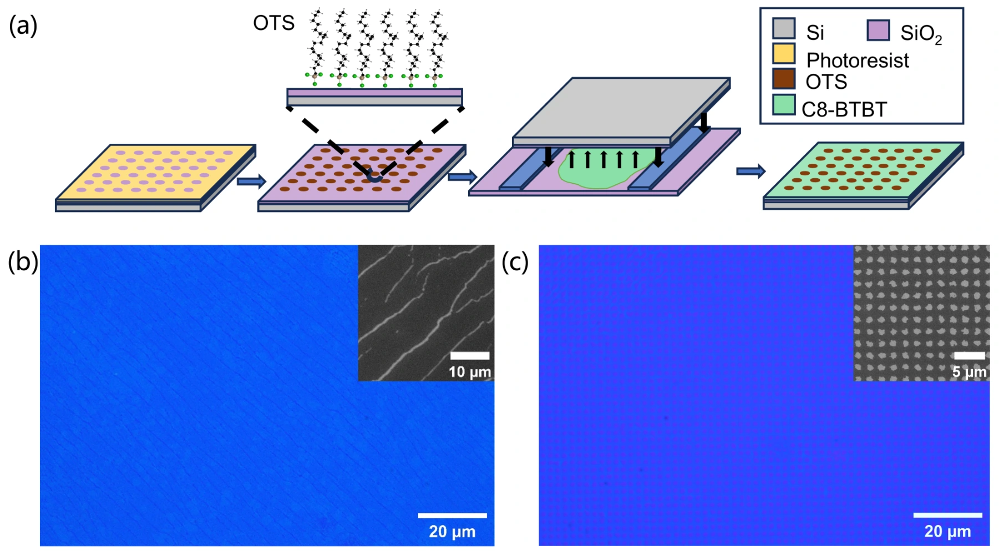
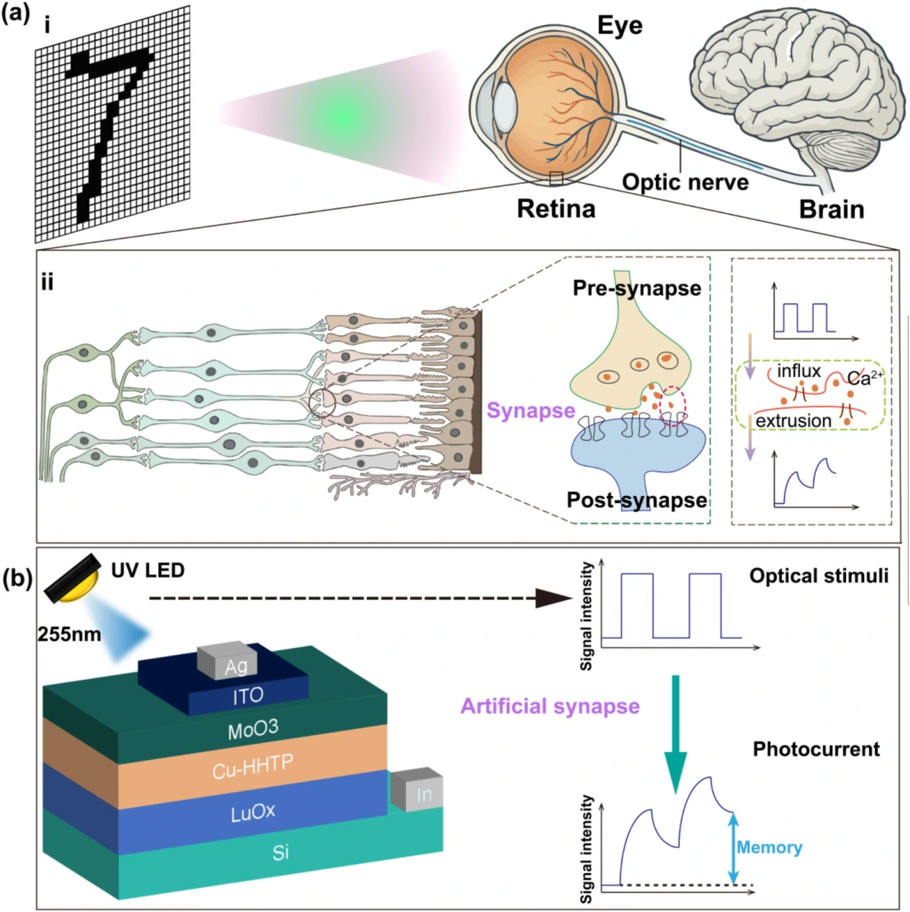
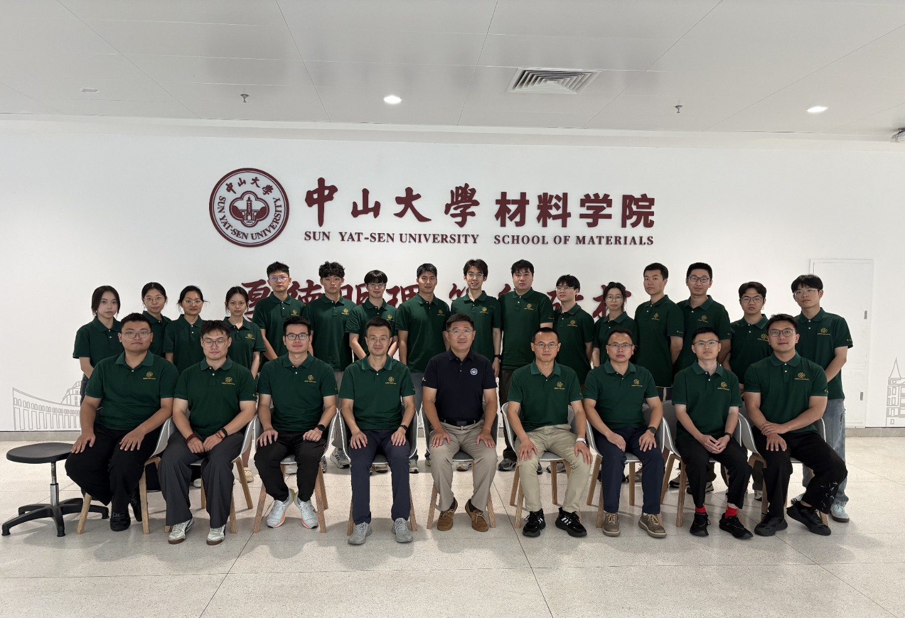

设备图片实拍照片待补充
01材料制备 / PREPARATION
材料制备平台
用于功能材料、量子点及器件前驱体系的制备与工艺探索，设备实拍与具体型号可在后续补充。

先进集成电路材料与类脑芯片课题组
Advanced IC Materials & Neuromorphic Chips Research Group
致力于突破后摩尔时代的算力瓶颈，
聚焦于新型半导体材料、忆阻器器件、以及具有高能效比的
神经形态（类脑）计算架构的研究与应用。

01面向气体、生化与环境信息感知，研究高灵敏功能材料、微纳结构及传感器件，实现复杂信号的精准识别与响应。

02融合光电探测、信息存储与突触可塑性，探索感存算一体化器件，为仿生视觉和高效神经形态计算提供硬件基础。
 03
03连接器件阵列、电路架构与智能算法，开展神经形态芯片和软硬件协同研究，面向低功耗感知与智能决策应用。
先进集成电路材料与类脑芯片实验室（AMBIC）依托中山大学材料学院，面向后摩尔时代智能感知与高效计算需求，开展从新型材料、功能器件到类脑芯片与智能系统的交叉研究。
实验室以“材料—器件—电路—系统”协同创新为主线，聚焦智能感知材料与传感器件、光电融合神经形态器件和类脑芯片设计与智能系统，探索感知、存储与计算深度融合的新路径。

用于功能材料、量子点及器件前驱体系的制备与工艺探索，设备实拍与具体型号可在后续补充。
面向氧化物、金属及半导体功能薄膜的可控制备，为异质结构筑和器件集成提供工艺基础。
围绕材料结构、表面形貌和关键物性开展表征，为材料优化、缺陷分析与界面机制研究提供依据。
用于器件电学、光响应与动态行为测试，支撑光电探测、人工突触及存算器件性能评估。
通过能带工程、缺陷工程和界面电荷调控，实现光生载流子的分离、输运与俘获，并将材料的慢动力学转化为短时/长时可塑性。
记录实验室在智能感知、神经形态器件与类脑芯片方向的科研进展、论文成果和团队活动。
欢迎学术交流、科研合作以及优秀学生加入课题组。